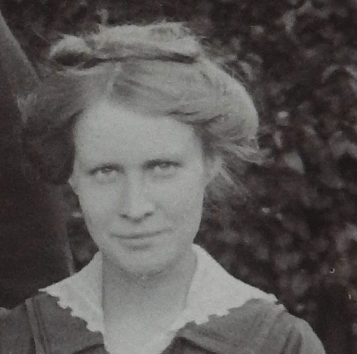
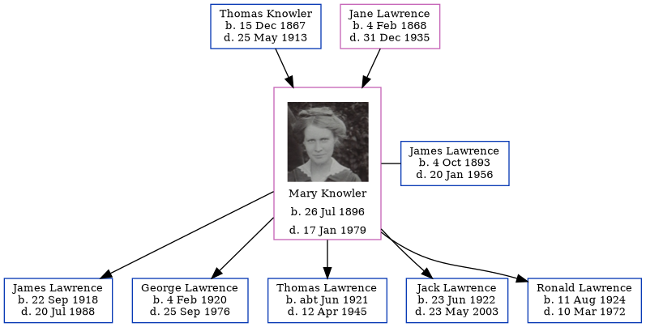

Mary Elizabeth Lawrence (née Knowler) 1896 - 1979
[ Home ] | [ Calendar ] | [ Surnames Index ] | [ Errors ] | [ Family History ]The child of Thomas Knowler (an agricultural labourer) and Jane Lawrence, Mary Knowler, the first cousin twice-removed on the mother's side of Nigel Horne, was born in Eastry, Kent, England on 26 Jul 18961,2,3,4,5 and married her cousin on her mother's side James Lawrence (a general farm worker with whom she had 5 children: James Thomas, George Edward, Thomas William, Jack and Ronald) at St Augustine, Northbourne, Kent, England on 14 Sept 19187 (JulAug/Sep).
During her life, she was living in Woodnesborough, Kent, England in 19011; at Meadow Cottages, Marshside, Kent on 19 Jun 19218; at 1 Church Cottage in Woodnesborough on 29 Sept 19392; at 8 Fitzroy Avenue, Ramsgate, Kent in 1965; and at 3 Payton Close, Margate, Kent in 1979.
She died on 17 Jan 1979 in Thanet, Kent, England4,6.
Parents
- Thomas William was born on 15 Dec 1867
- Jane was born on 4 Feb 1868
Children
- James Thomas was born on 22 Sept 1918
- George Edward was born on 4 Feb 1920
- Thomas William was born c. Jun 1921
- Jack was born on 23 Jun 1922
- Ronald was born on 11 Aug 1924
Citations
- 1901 England Census Online publication - Provo, UT, USA: The Generations Network, Inc., 2005.Original data - Census Returns of England and Wales, 1901. Kew, Surrey, England: The National Archives of the UK (TNA): Public Record Office (PRO), 1901. Data imaged from the National (Relation to Head of House: Daughter)
- 1939 Register - Findmypast (was the wife of the head of the household)
- England & Wales deaths 1837-2007 - Findmypast
- England & Wales, Death Index: 1984-2005 Online publication - Provo, UT, USA: The Generations Network, Inc., 2007.Original data - General Register Office. England and Wales Civil Registration Indexes. London, England: General Register Office. © Crown copyright. Published by permission of the Cont
- England & Wales, FreeBMD Birth Index, 1837-1915 Online publication - Provo, UT, USA: The Generations Network, Inc., 2006.Original data - General Register Office. England and Wales Civil Registration Indexes. London, England: General Register Office. © Crown copyright. Published by permission of the Cont
- England & Wales Government Probate Death Index 1858-2019 - Findmypast
- England & Wales, Marriage Index: 1916-2005 Online publication - Provo, UT, USA: The Generations Network, Inc., 2009.Original data - General Register Office. England and Wales Civil Registration Indexes. London, England: General Register Office. © Crown copyright. Published by permission of the Cont
- 1921 Census Of England & Wales - Findmypast (was age 24 and the wife of the head of the household)
Media
Mary Elizabeth Knowler

1965 Kelly's Thanet Directory

England & Wales marriages 1837-2008 - BMD/M/1918/3/AZ/000681/097
England & Wales births 1837-2006 - BMD/B/1896/3/AZ/000342/331
England & Wales deaths 1837-2007 - BMD/D/1979/1/AZ/000761/117
Canterbury Marriages - GBPRS/CANT/M/97045203/2
1939 Register Transcription - TNA-R39-1819-1819H-010-21
1939 Register Transcription - TNA-R39-1819-1819H-010-23
1939 Register - TNA/R39/1819/1819H/010/22
England & Wales Government Probate Death Index 1858-2019 - GBOR/GOVPROBATE/C/1979-1979/00130708
Family Tree
Map
Generated by ged2site. Last updated on Jul 3, 2024
Known Issues
Residence record for 1979 contains no citation
Residence record for 1965 contains no citation
Date of residence (1901) differs from mother's in same year (31 Mar 1901)
1901: Not living with either parent in childhood when aged 4
Census information missing between 1901 England Census and 1921 Census Of England & Wales - Findmypast